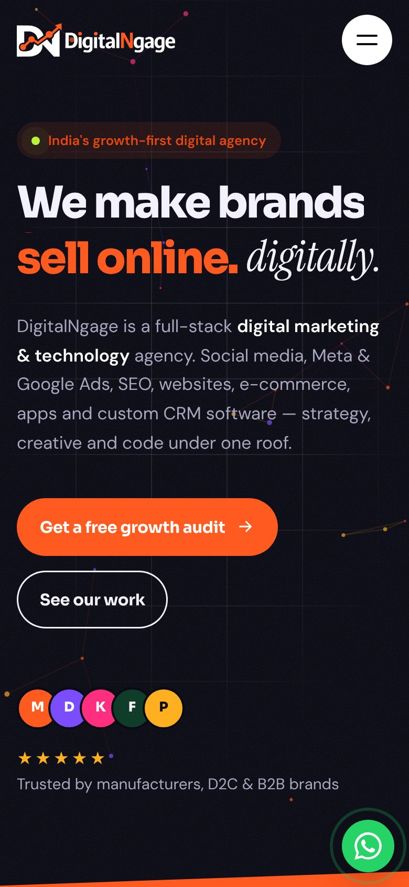

Case study · Agency website
Website redesign · Design & development
An agency website that sells the agency.
DigitalNgage is a digital marketing and technology agency. Its old site was a single page that hid and showed sections with JavaScript. We rebuilt it as a 13-page, fully animated website with a page for every service, real client case studies, articles and a lead form that works — and it still runs on simple shared hosting.

